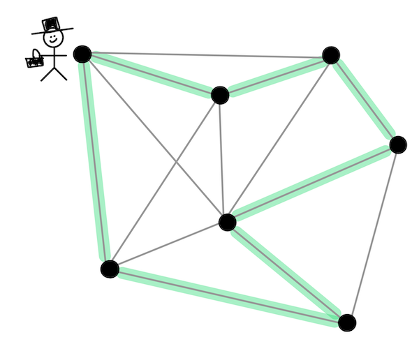
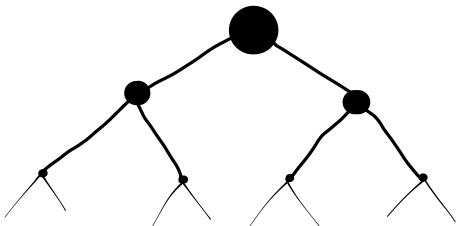
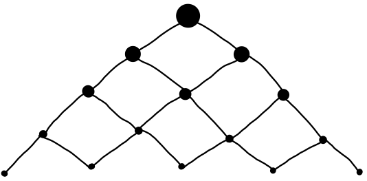
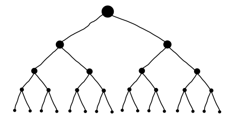
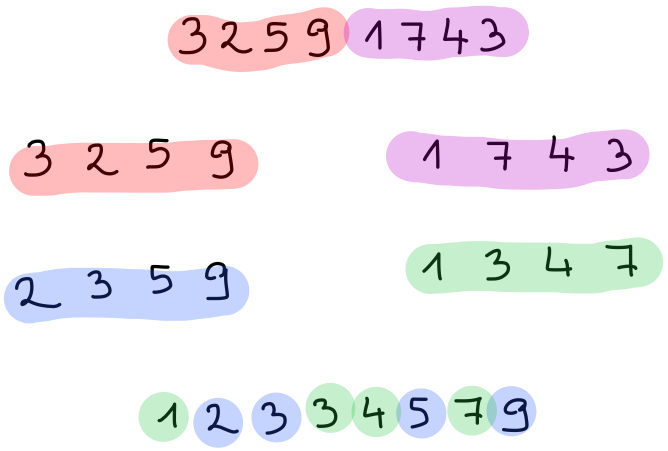
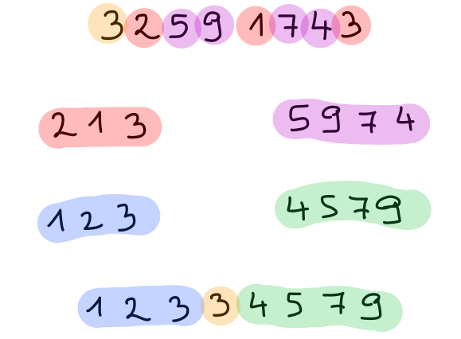
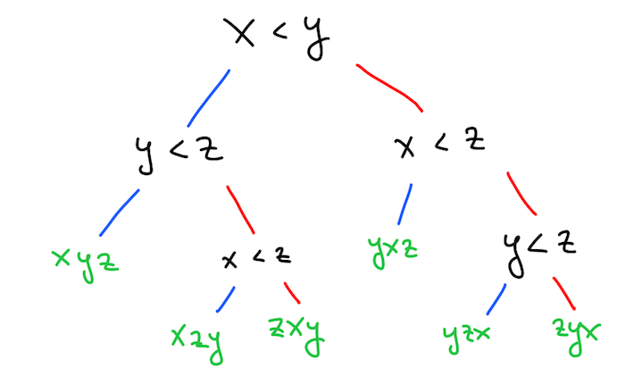

Deli in vladaj#
Če lahko iz rešitve manjših podnalog sestavimo rešitev celotne naloge, pravimo, da ima naloga lastnost optimalne podstrukture. V tem primeru lahko postopamo v treh korakih:
nalogo razdelimo na manjše podnaloge
podnaloge rekurzivno rešimo
dobljene rešitve združimo v rešitev prvotne naloge
Vse naloge niso take, na primer problem trgovskega potnika, pri katerem moramo najti najcenejši cikel, ki obišče vsa vozlišča na grafu. Tudi če znamo najti najcenejši cikel na manjšem grafu, nam to pri iskanju cikla v večjem grafu nič ne pomaga.

Ampak precej nalog pa lastnost optimalne strukture ima in pri tem predmetu bomo pogledali dve splošni strategiji za njihovo reševanje. Prva strategija, ki jo bomo spoznali v tem poglavju, je strategija deli in vladaj, v katerem nam uspe nalogo razdeliti na za konstantni faktor manjše podnaloge (na primer iz velikosti \(n\) na velikost \(n / 2\)):

Včasih bodo podnaloge manjše samo za neko konstanto (na primer iz velikosti \(n\) na velikost \(n - 1\)), vendar se bodo med seboj prekrivale, kar bomo izkoristili tako, da bomo vsako rešili le enkrat. V tem primeru govorimo o dinamičnem programiranju, ki ga bomo spoznali kasneje.

Kadar pa naloge niso ne za konstantni faktor manjše in se ne prekrivajo, pa ni neke splošne strategije in običajno gre za zahtevne naloge, kjer ni učinkovite rešitve.

Oglejmo si strategijo deli in vladaj na nekaj najbolj znanih primerih:
Hitro potenciranje#
Potenciranje lahko definiramo s pomočjo množenja prek sledeče rekurzivne zveze
ki pa zahteva \(n - 1\) množenj in ima tako časovno zahtevnost \(O(n)\) ob predpostavki, da ima množenje časovno zahtevnost \(O(1)\) (kar pri poljubno velikih številih sicer ni več res). Število množenj lahko zmanjšamo, če opazimo, da lahko sode potence izračunamo kot kvadrate njihovih korenov. Na primer, če poznamo \(a^{18}\) lahko \(a^{36}\) izračunamo samo z enim množenjem. Podobno lahko \(a^{18}\) samo z enim množenjem izračunamo iz \(a^9\). Pri lihih potencah je postopek le malenkostno drugačen, saj je na primer \(a^9 = a \cdot a^8\), kjer zopet nastopa soda potenca. V splošnem je torej postopek, ki ga imenujemo hitro potenciranje, podan z rekurzivno zvezo:
Ker v vsakem koraku \(n\) razpolovimo, moramo narediti približno \(\log_2 n\) množenj, torej je časovna zahtevnost hitrega potenciranja enaka \(O(\log n)\).
let rec potenciraj a =
function
| 0 -> 1
| n ->
let k = potenciraj a (n / 2) in
if n mod 2 = 0 then k * k else a * k * k
val potenciraj : int -> int -> int = <fun>
potenciraj 2 10
- : int = 1024
Na podoben način lahko z \(O(\log n)\) računskimi operacijami izračunamo tudi \(n\)-to Fibonaccijevo število. Tu seveda predpostavka o konstantnem času odpade, saj števila zelo hitro naraščajo. Definicijo \(f_n = f_{n - 1} + f_{n - 2}\) lahko razširimo v (na prvi pogled nesmiselen) sistem enačb:
ki pa ga lahko pretvorimo v matrično enačbo
kar lahko razpišemo v
Torej je \(f_n\) enak prvi komponenti matrike \(\begin{pmatrix} 1 & 1 \\ 1 & 0\end{pmatrix}^{n - 1}\), ki pa jo lahko izračunamo s pomočjo hitrega potenciranja. Če bi matriko diagonalizirali, pa iz te potence dobimo znano Binetovo formulo.
Urejanje z zlivanjem#
Strategija deli in vladaj je zelo koristna pri urejanju seznamov. Prvi algoritem, ki ga bomo spoznali, je urejanje z zlivanjem ali mergesort. Ta deluje tako, da seznam razdelimo na dva manjša podseznama (vseeno kakšna, le da vsak vsebuje približno polovico elementov prvotnega seznama), nato pa vsakega rekurzivno uredimo. Ko sta obe polovici urejeni, ju lahko zlijemo tako, da z njunih začetkov postopoma jemljemo najmanjše še ne vzete elemente:

V OCamlu lahko delitev na pol najenostavneje izvedemo tako, da damo v eno polovico elemente na lihih, v drugo pa elemente na sodih mestih:
let rec razdeli_na_pol = function
| [] -> [], []
| x :: xs ->
let xs1, xs2 = razdeli_na_pol xs in
x :: xs2, xs1
val razdeli_na_pol : 'a list -> 'a list * 'a list = <fun>
razdeli_na_pol [1; 2; 3; 4; 5; 6; 7; 8]
- : int list * int list = ([1; 3; 5; 7], [2; 4; 6; 8])
Zlivanje naredimo tako, da primerjamo glavi dveh seznamov, izberemo manjšo ter nadaljujemo rekurzivno. Ko je eden izmed seznamov prazen, vzamemo preostale elemente drugega seznama:
let rec zlij xs ys =
match xs, ys with
| [], _ -> ys
| _, [] -> xs
| x :: xs', y :: ys' ->
if x <= y then
x :: zlij xs' ys
else
y :: zlij xs ys'
val zlij : 'a list -> 'a list -> 'a list = <fun>
zlij [1; 10; 11; 100; 101; 110; 111] [2; 20; 22; 200; 202; 220; 222]
- : int list = [1; 2; 10; 11; 20; 22; 100; 101; 110; 111; 200; 202; 220; 222]
Seznam potem uredimo tako, kot smo omenili na začetku: razdelimo ga na pol, obe polovici rekurzivno uredimo in ju zlijemo. Pri tem ne smemo pozabiti na robni primer, ko je seznam tako majhen, da ga ne moremo več razdeliti na dve polovici:
let rec uredi_z_zlivanjem sez =
match sez with
| [] | [_] -> sez
| _ ->
let sez1, sez2 = razdeli_na_pol sez in
let sez1' = uredi_z_zlivanjem sez1
and sez2' = uredi_z_zlivanjem sez2 in
zlij sez1' sez2'
val uredi_z_zlivanjem : 'a list -> 'a list = <fun>
uredi_z_zlivanjem [3; 2; 5; 9; 1; 7; 4; 3]
- : int list = [1; 2; 3; 3; 4; 5; 7; 9]
Časovna zahtevnost urejanja z zlivanjem#
Izračunajmo časovno zahtevnost urejanja z zlivanjem. Da uredimo seznam dolžine \(n\), ga moramo najprej razdeliti na pol, kar lahko naredimo v času \(O(n)\). Če želimo biti bolj učinkoviti, lahko delamo zgolj s premikanjem indeksov in ga tako razdelimo v času \(O(1)\), vendar to splošne časovne zahtevnosti ne bo spremenilo, saj moramo seznama tudi zliti, kar zahteva \(O(n)\) časa, saj moramo narediti nov seznam dolžine \(n\). Ostane nam še čas, ki ga porabimo za rekurzivno ureditev. Ker urejamo dva polovico manjša seznama, lahko vse skupaj zapišemo z rekurzivno zvezo
kjer s \(T(n)\) označimo čas, ki ga potrebujemo, da uredimo seznam dolžine \(n\). Rešitev te enačbe je \(T(n) = O(n \log n)\), kar je precej hitreje od naivnih algoritmov za urejanje, ki delujejo v času \(O(n^2)\). Reševanje takih enačb presega obseg tega predmeta, intuicija za njim pa ni preveč zapletena. Enačbo postopoma razpisujemo:
Vidimo, da v vsakem koraku dobimo dodaten člen z zahtevnostjo \(O(n)\), kar po \(k\) korakih znaša
Ker lahko \(n\) razpolovimo \(\lceil \log_2 n \rceil\)-krat, na koncu dobimo
Hitro urejanje#
Drugi znani algoritem za urejanje pa je hitro urejanje ali quicksort. Tudi ta deluje tako, da seznam razdeli na dva manjša podseznama, vsakega rekurzivno uredi, na koncu pa obe urejeni polovici združi. Razlika je v tem, da več dela opravi pri deljenju seznama na dva dela. Pri tem elemente uredi tako, da so v eni polovici manjši, v drugi polovici pa večji elementi. Posledica tega je, da je združevanje enostavno, saj obe polovici samo še staknemo. Elemente razdelimo po velikosti glede na izbrani element, ki mu pravimo pivot in ga običajno vzamemo z začetka seznama. Na primer, v spodnji sliki za pivot vzamemo število \(3\). Postopku deljenja zato pravimo pivotiranje.

V OCamlu seznam enostavno pivotiramo s pomočjo funkcije List.partition, ki seznam razdeli na elemente, ki zadoščajo predikatu, in tiste, ki mu ne.
let rec pivotiraj p xs =
List.partition (fun x -> x <= p) xs
val pivotiraj : 'a -> 'a list -> 'a list * 'a list = <fun>
pivotiraj 3 [2; 5; 9; 1; 7; 4; 3]
- : int list * int list = ([2; 1; 3], [5; 9; 7; 4])
let rec hitro_uredi sez =
match sez with
| [] | [_] -> sez
| p :: xs ->
let sez1, sez2 = pivotiraj p xs in
let sez1' = hitro_uredi sez1
and sez2' = hitro_uredi sez2 in
sez1' @ p :: sez2'
val hitro_uredi : 'a list -> 'a list = <fun>
hitro_uredi [3; 2; 5; 9; 1; 7; 4; 3]
- : int list = [1; 2; 3; 3; 4; 5; 7; 9]
Za pivotiranje in stikanje skupaj porabimo linearno mnogo časa. Tako ob predpostavki, da pivot pade približno na sredino urejenega seznama, pri hitrem urejanju seznam velikosti \(n\) razdelimo na dva podseznama velikosti \(n / 2\), zato za časovno zahtevnost zopet dobimo enačbo
Vendar zgornji predpostavki ni vedno zadoščeno. Na primer, če je seznam že urejen (ali skoraj urejen), je prvi seznam skoraj prazen, drugi pa le malenkost manjši, zato dobimo enačbo \(T(n) = O(n) + T(n - 1)\), kar vodi v zahtevnost \(O(n^2)\). Temu se lahko izognemo tako, da za pivot izberemo naključni element, da seznam pred urejanjem premešamo (npr. s Fisher-Yatesovim algoritmom), ali kaj podobnega. V praksi se tako izkaže, da je hitro urejanje kljub slabši asimptotski zahtevnosti hitrejše od urejanja z zlivanjem.
Poleg tega ima hitro urejanje dodatno prednost, da z njim lahko seznam predstavljen s tabelo uredimo na mestu brez porabe dodatnega prostora.
let zamenjaj tabela i j =
let t = tabela.(i) in
tabela.(i) <- tabela.(j);
tabela.(j) <- t
let pivotiraj_na_mestu tabela i0 j0 =
let pivot = tabela.(i0) in
let i = ref (i0 + 1)
and j = ref j0 in
while !i < !j do
while !i < !j && tabela.(!i) <= pivot do
incr i
done;
while !i < !j && tabela.(!j) > pivot do
decr j
done;
zamenjaj tabela !i !j
done;
let p = if tabela.(!i) <= pivot then !i else !i - 1 in
zamenjaj tabela i0 p;
p
let hitro_uredi_na_mestu tabela =
let rec uredi_med_indeksoma i j =
if i < j then
let p = pivotiraj_na_mestu tabela i j in
uredi_med_indeksoma i (p - 1);
uredi_med_indeksoma (p + 1) j
in
uredi_med_indeksoma 0 (Array.length tabela - 1)
val zamenjaj : 'a array -> int -> int -> unit = <fun>
val pivotiraj_na_mestu : 'a array -> int -> int -> int = <fun>
val hitro_uredi_na_mestu : 'a array -> unit = <fun>
Oba algoritma za urejanje, ki smo ju spoznali, imata optimalno časovno zahtevnost za urejanje s primerjavo. To pomeni, da ima vsak algoritem, ki bi pri urejanju uporabljal primerjavo elementov, časovno zahtevnost vsaj \(O(n \log n)\). Razlog se skriva v tem, da vsak tak algoritem porodi odločitveno drevo, v katerem so vozlišča primerjave elementov, listi pa permutacije prvotnega seznama.
Na primer, eno tako drevo, ki ga porodi urejanje z mehurčki na seznamu \([x, y, z]\), je:

Če bi izbrali drug algoritem, bi dobili drugačno drevo. Bolj plitko je drevo, hitrejši je algoritem. Toda ne glede na to, kako plitko je drevo, mora imeti vsaj \(n!\) listov, ker obstaja vsaj toliko različnih permutacij, ki jih mora vrniti. Zato mora biti odločitveno drevo globine vsaj \(\log n!\). Hitro lahko ocenimo, da je \(n! > (n / 2)^{n / 2}\), zato je \(\log(n!) > (n / 2) \log(n / 2) = O(n \log n)\).
Če pri urejanju uporabljamo še dodatne predpostavke, na primer, da so vsi elementi števila v nekem razponu, pridemo do še hitrejših algoritmov.